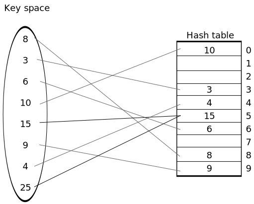

Hashing
- Why we need hashing?
- Hashing is usefull for searching
- Hashing is a technique by which we can access key element data from hash table in O(1) time.
- Here key should be mapped on hash table so its just like domain and range.
So element from domain are mapped to element on range, so it is like a relationship.
So mapping domain to range is done by a function.
There are 4 relational mapping
One-one mapping
- Keys: 8, 3, 6, 10, 15, 9, 4
- We have to map these keys to hash table and the function we are going to use is h(x) = x
- We can say, we are not storing key directly, we are using hash function and that hash function
is giving index and we are storing key at that index.
- Now if we have to search for any key we will use hash function.
Let's search 9, h(9) = 9, so go to 9th index.
- Functions supports two types of mapping:
- one-one
- many-one
- h(x) = x, we call it as ideal hashing because the time taken for searching, storing or deleting
an element is constant.
Drawback of ideal hashing
- The space required is very huge.
- If we have key value as 100 then hash table should have 100 as index also.
Now who is responsible for this draw back??
If we want to store key in small space then we have to modify hash function.
- Let's see how we can modify hash function, if we are providing only 10 spaces from 0 to 9 then hash
function should be modified.
h(x) = x % 10

Drawback of modulus hash function
- In above table as we can see the key 25 should be stored in index 5 as h(25) = 5, but that index is
already occupied.
- There is no storage for 25, so two key are mapped at same index.
- When two key are mapped at same location this is known as collision.
- Hence h(x) = x % 10 is many-one function.
How to resolve these collisions
Methods for resolving collision
- There are two major methods
- Open hashing: Here we will consume extra space beyond the hash table given.
- Here the method used is chaining.
- Closed hashing: When space given is fixed and we have to use that space only, we will
not increase the space.
- Open addressing: If the given address is already occupied, then we will not
forcely store other value in that space, we will use other free space.
- So where will you store?
- There are 3 options:
- Linear probing
- Quadratic probing
- Double hashing
Chaining
- For resolving collision chaining is one of the mehod which comes under open hashing.
- Now if we want to search 75, we will put it in hash function - h(75) = 5
Now search for 75 in chain of 5th index.
Linear probing
- It is collision resolution technique which comes under closed hashing.
- We will be using same hash function h(x) = x % 10, but if the index location is already
occupied then linearly we will probe (search) the next empty space.
- Our function was h(x) = x % 10
Modifying it to h'(x) = (h(x) + f(i)) % 10, where f(i) = i and i = 0, 1, 2, ...
- Linear probing method is little time taking it is not O(1).
Quadratic probing
- It is one the collision resoluting technique.
- It comes under open addressing.
- It is introduced to overcome the problem of clustering of key on after another.
- h'(x) = (h(x) + f(i)) % 10 where f(i) = i2 and i = 0, 1, 2, ...
Different hashing function
- Mod
- Mid square
- Folding
Properties of hash functions
- The hash function should be selected such that he value in hash table must be uniformly distributed
whether you are using chaining, open addressing, linear probing, quadratic probing.
- Hash function should be selected according to the data that we want to insert inside the hash table.
- If we are using linear probing then the size of hash table should be double the number of element.
Mod
- h(x) = (x % size ) + 1 ( if array index starts from 1).
Midsquare method
- This method suggest that whatever the key is you do square of that key and take the middle
digit.
- Example: key = 11
then (11)2 = 121
middle of 121 is 2, so 11 will be stored at index 2.